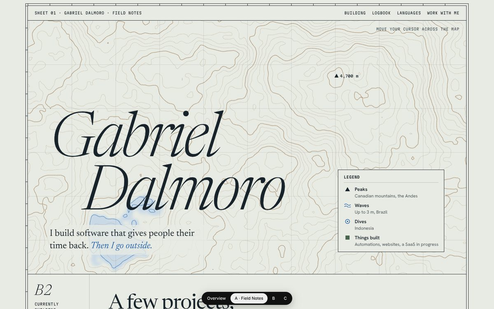
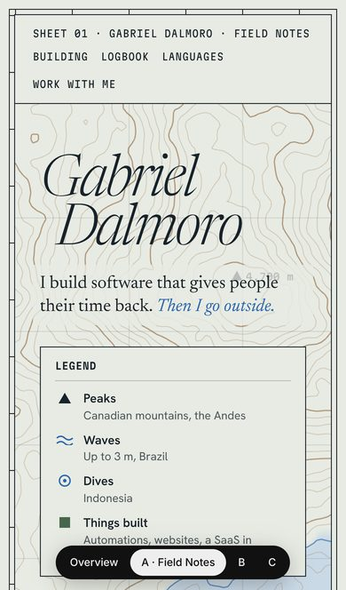
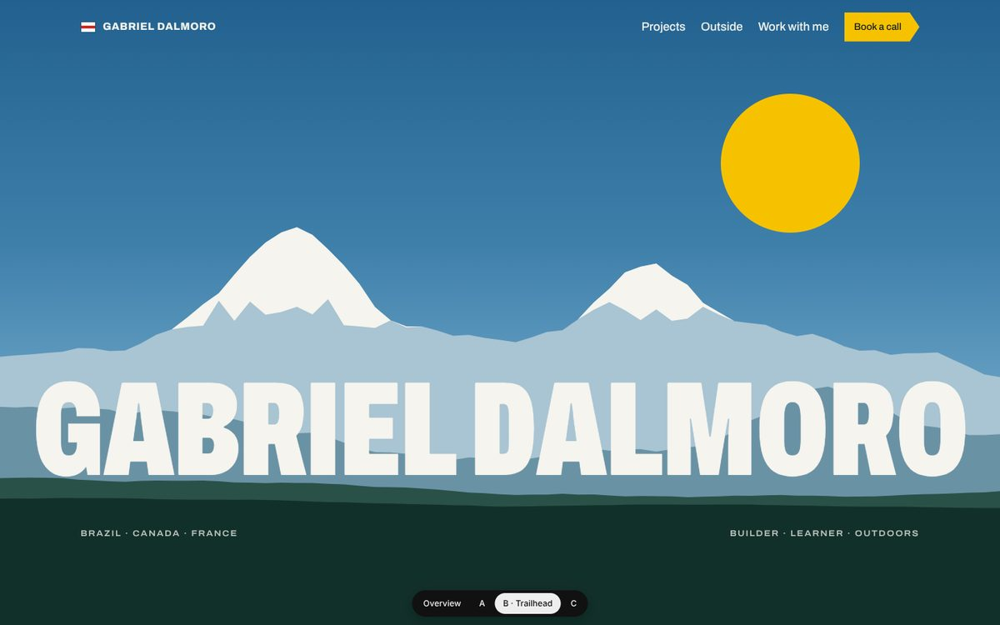
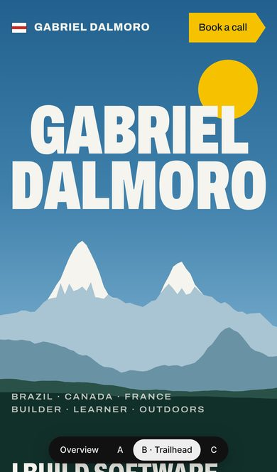
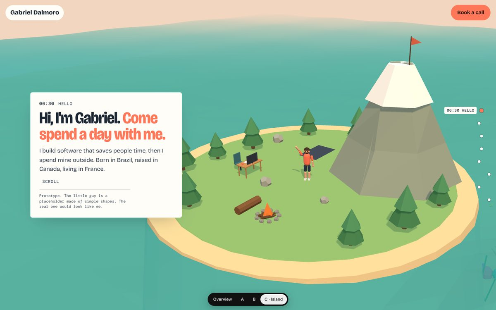
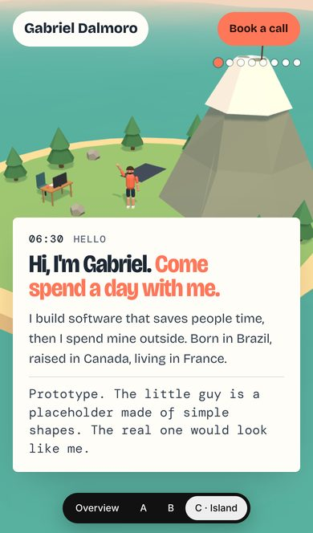

Each one is a real page you can scroll. Open them on your phone and your computer. Then tell me what you love and what you hate in each. Mixing is allowed: "A's fonts with C's 3D" is a great answer.


Field Notes
Your site as a topographic map and an explorer's logbook. Calm, precise and grown-up. Move your cursor over the map and it shows the elevation.


Trailhead
A bold alpine travel poster. Your projects are Swiss hiking signposts. Your yellow stays, but now it means something: it's the trail-sign yellow every hiker in the Alps knows.


Island
Your 3D idea, working. A little world with a desk, a peak, a wave, a reef, a gym mat and a campfire. As you scroll, the figure hops between them and the day goes from dawn to night.
Your work, your story, your languages and your life outside are all on the main site. No more "under construction" side page.
No glowing borders and no rainbow of labels. Each direction has one concept and one bold colour.
Real font pairings and a real size scale, instead of bold Inter on everything.